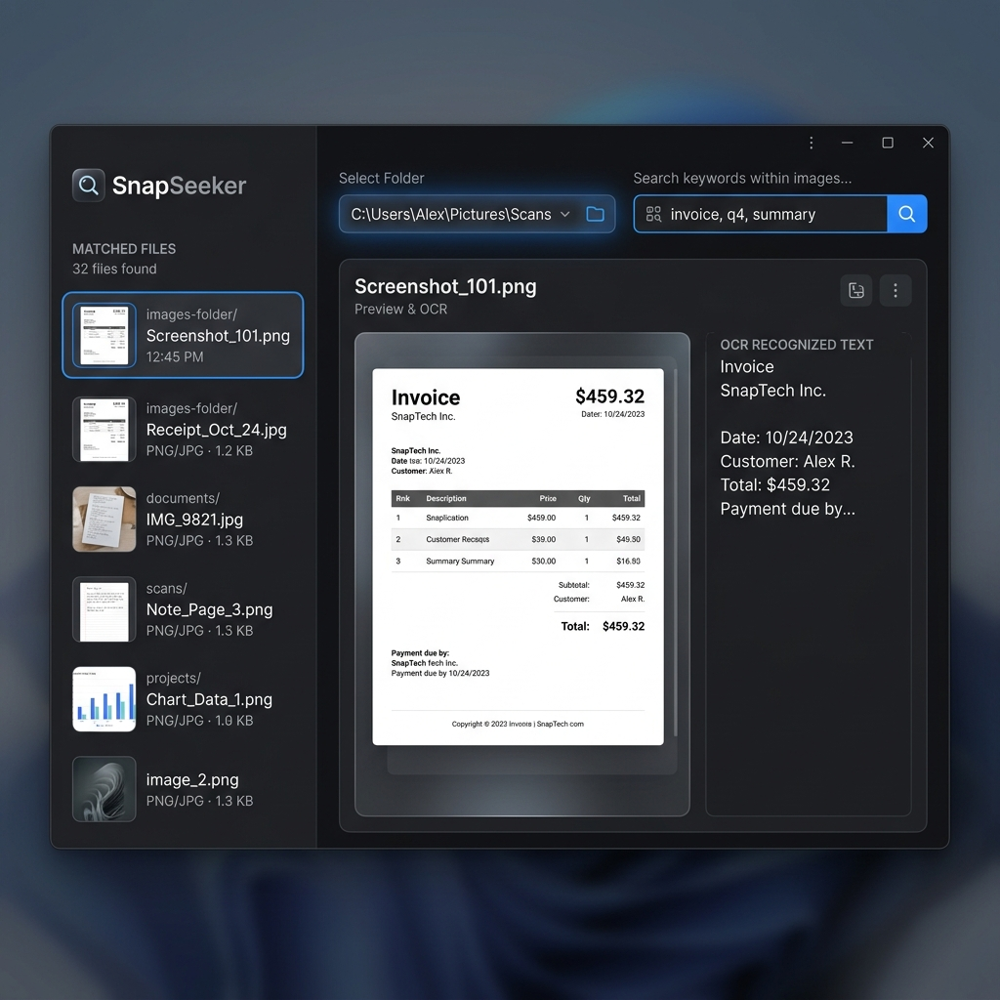

A fast, private, and 100% offline OCR search engine for your desktop. Stop wasting hours digging through folders for backup codes, API credentials, or receipts.

A simple, elegant utility that runs completely on your machine.
Your images never touch the cloud. All OCR text extraction runs locally on your computer, keeping your sensitive data private.
Powered by local worker threads that process multiple images in the background, keeping the user interface completely responsive.
Filter through your screenshots by typing comma-separated keywords. Find files that match any specified terms instantly.
Displays matches in a clean list with text previews, and lets you double-click any result to open it in your system photo viewer.
Three simple steps to retrieve your screenshot contents.
Choose the directory on your drive containing your screenshots or downloaded images.
Type in keywords (like "backup" or "oracle") to filter images by the text they contain.
Browse through the list of matches, preview the extracted text, and open the file directly.